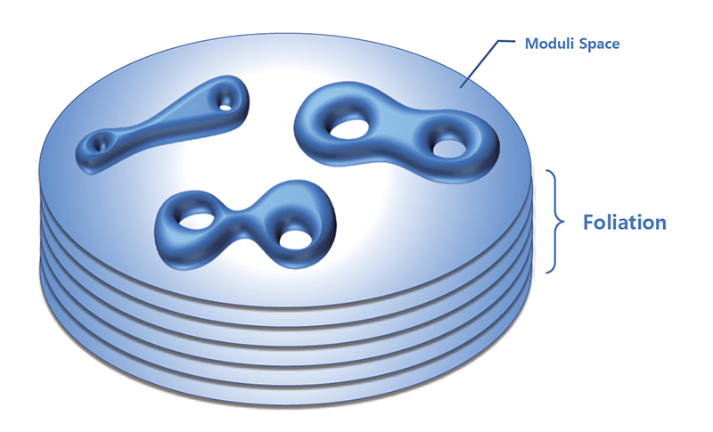

주제별 연구성과
주제별 연구성과
KAIST RESEARCH ACHIEVEMENTS
1차원 공간상의 움직임으로
6n차원의 공간구조를
이해하는 방법론 제시
수리과학과 백형렬
요약
본 연구는 곡면이 가질 수 있는 모든 기하적인 형태들을 모아놓은 공간인 모듈라이 공간의 구조와 관련되어 있다. 모듈라이 공간은 고차원 공간으로, 이렇게 차원이 높은 공간을 직접 이해하기는 어렵다. 주어진 공간을 이해하는 가장 좋은 방법은 주어진 공간을 더 낮은 차원의 부분공간들로 쪼개어 낮은 차원의 이해로부터 전체 공간의 이해를 구축해나가는 것이다. 신기하게도 n차원 공간을 n-1차원 공간으로 쪼개어 보는 것은 1차원 공간상의 동역학계와 관계가 있다. 본 연구에서는 모듈라이 공간과 관련된 1차원 동역학계의 미분가능성에 대한 완전한 답을 찾았고, 그로부터 6n차원의 모듈라이 공간을 이해할 수 있는 방법론을 제시했다.
연구배경
우리가 사는 세상은 3차원이지만, 대부분의 물체를 인식할 때 우리는 그 물체의 겉표면의 모양을 통해 인지하게 된다. 그만큼 다양한 곡면이 가질 수 있는 기하학적인 형태들을 이해하는 것은 우리의 삶과 밀접한 관계가 있는 매우 근본적인 질문이다. 주어진 곡면이 가질 수 있는 기하적인 형태들을 모아놓은 공간을 모듈라이 공간이라고 부르는데, 곡면은 2차원이지만 모듈라이 공간은 상당히 고차원의 공간이다. 예를 들어 워터파크에 워터슬라이드를 탈 때 쓰는 2인용 튜브에 해당하는 곡면을 생각한다면, 이 곡면의 모듈라이 공간은 6차원 공간이 된다. 이와 같이 중요한 의미를 가지지만 차원이 높아 이해하기 힘든 모듈라이 공간을 1차원 공간상의 움직임을 통해 이해할 수 있는 길이 있다면 어떨까? 본 연구는 이 질문에 수학적으로 대답하기 위한 토대에 해당되는 연구이다.
연구내용
어떤 공간이든 그 공간의 대칭변환들을 다 모아놓으면 군이 되는데 (군은 몇몇 조건을 만족하는 이항연산이 정의된 집합이다), 이러한 군을 그 공간의 기본군이라고 부른다. 앞 서 말 한 모듈라이 공 간 의 기본군은 사상류군이라고 불린다. 본 연구에서는 사상류군의 1차원 공간상의 작용을 연구하였고, 그 과정에서 직교아틴군에 대한 연구가 핵심이 되었다. 현대사회에는 노드가 많은 복잡한 네트워크의 구조를 분석하는 일들이 다양한 분야에서 이루어지고있는데, 이러한 네트워크는 기본적으로 점과 선으로만 이루어진 도형으로 볼 수 있고 그래프라고 부른다. 그래프가 주어지면, 그래프의 노드들이 생성원소가 되고 선으로 연결된 두 노드에 해당되는 두 원소의 순서를 바꾸는 것이 허용되는 군을 생각 할 수 있는데 이를 직교아틴군이라고 한다. 당연히 예상가능 하게도 그래프의 조합론적 구조와 대응되는 직교아틴군의 대수적 구조 사이에는 밀접한 관계가 있다. 곡면이 주어지면 이 곡면의 사상류군 속에 부분군으로 포함된 직교아틴군을 생각할 수 있다. 곡면 위에 그릴 수 있는 닫힌 곡선들을 노드로 하고, 곡면 위에서 만나지 않는 노드들을 연결하면 그래프를 얻게 되는데 이를 곡선그래프라고 한다. 어떤 그래프가 곡선 그래프의 부분그래프로 나타나면, 이 그래프로부터 얻어지는 직교아틴군이 곡면의 사상류군의 부분군으로 표현될 수 있음이 알려져 있다.

이를 이용하면 사상류군 속에 많은 직교아틴 부분군들을 다룰 수 있게 된다. 직교아틴군들은 그 정의가 단순하기 때문에 기술이 쉽고, 이를 연구할 수 있는 수학적인 툴도 많이 개발되어 있다. 아주 단순한 몇 개의 곡면을 제외하면 모든 곡면의 곡선그래프는 점 네 개가 일렬로 연결된 선같이 생긴 그래프를 부분 그래프로 가진다. 때문에 점 네 개가 일렬로 연결된 그래프의 직교아틴군은 이러한 곡면들의 사상류군의 부분군이 된다. 나아가 사상류군의 임의의 유한지수 부분군을 택해도 이 직교아틴군이 여전히 부분군으로 포함되는 것을 밝힐 수 있다. 이 연구의 가장 주요한 결과 중 하나는 점 네 개가 일렬로 연결된 그래프로부터 얻어진 직교아틴군이 컴팩트한 1차원 다양체에 부드러운 (수학적으로는 두 번 이상 미분가능한) 작용을 할 수 없다는 것을 증명한 것이다. 이 결과를 이용하면, (거의 모든 곡면에서) 사상류군의 임의의 유한지수 부분군은 컴팩트한 1차원 공간에 부드러운 작용을 할 수 없음이 증명된다. 처음에는 곡면의 기하학에서 시작한 문제가, 사상류군 속의 특정한 부분군을 찾는 대수적 문제로, 다시 1차원 공간상의 함수의 미분가능성을 묻는 해석학의 문제로 바뀌었다. 이와 같이 여러 분야의 수학이 한데 어우러지는 것이 저차원 위상 수학의 독특한 매력이다.
기대효과
그런데 이와 같은 1차원 동역학계가 가지는 미분가능성에 대한 결과가 모듈라이 공간을 이해하는데 어떻게 도움이 된다는 말일까? 우선 주어진 공간을 이해할 수 있는 한 가지 방법은 이 공간을 그보다 차원이 낮은 부분공간들이 켜켜히 쌓여서 만들어진 것으로 이해하고, 그들이 쌓여있는 구조를 파악 함으로써 원래의 공간의 구조를 이해하는 것인데 이러한 구조를 공간의 엽층구조라 한다. 3차원 공간에 대해서는 William Thurston에 의해 근본적인 이해가 많이 이루어졌는데, 특히 그는 3차원 공간을 2차원 공간들이 쌓인 것으로 보는 엽층구조에 대해서 수많은 업적들을 남겼다. 이러한 공로로 그는 1982년 필즈 메달을 수상했다. 한 예로 엽층구조의 한 층에 해당하는 곡면이 컴팩트한 곡면이면, 사실 다른 모든 층도 모두 위상동형의 컴팩트한 곡면이며, 주어진 3차원 다양체는 이러한 곡면을 두껍게 만든 모양 혹은 그 상태에서 경계면 둘을 이어붙여 만든 일종의 도넛같은 형태 등으로만 나타난다는 것을 보였다. 그런데 이렇게 3차원 공간의 엽층구조 이해에 중요한 정리의 증명의 핵심은 주어진 3차원 공간의 기본군이 한쪽 경계점이 생략된 1차원 막대모양 공간에 미분 가능한 작용을 할 수 있느냐를 판단하는 문제였다. Thurston의 연구를 확장한다면, 사상류군의 부분군들이 컴팩트한 1차원다양체에 미분 가능한 작용을 할 수 있느냐는 정보는 이 모듈라이 공간의 구조를 더 깊이 이해하는데 도움을 줄 수 있을 것으로 기대가 된다. 모듈라이 공간의 구조에 관한 연구는 수학적으로 매우 중요해서 Maryam Mirzakhani가 이에 대한 연구로 여성 최초로 2014년에 필즈 메달을 받기도 하였다.
연구성과
[논문 1] H. Baik, S. Kim, T. Koberda, “Unsmoothable group actions on compact one-manifolds”, Journal of the European Mathematical Society 21(8), 2333-2353 (2019). [2018 Impact Factor = 1.78]
[논문 2] H. Baik, S. Kim, T. Koberda, “Right-angled Artin Subgroups of C∞ diffeomorphism group of the real line”, Israel Journal of Mathematics 213(1), 175-182 (2016).
[수상] 대한수학회 상산젊은수학자상 수상 (2018)
연구비지원
European Research Council Grant Nb.10160104
삼성미래기술육성재단, 기초과학분야 연구과제